1004B10 POWER UNIT WITH MANUAL GEARBOX - R.R
- Path
- Procedures > 10 ENGINE > 1004 ENGINE AND POWER UNIT > 1004B POWER UNIT ASSEMBLY > 1004B10 POWER UNIT WITH MANUAL GEARBOX - R.R
- Kind
- repair procedure (removal / refitting; the operation number is the code)
- Applies to
- all engines; all production periods
- Interactive page
- https://sloeber94.github.io/elrnDB-fDbl/en/#/2584150
Applies to: engines: 1.4 8v; all production periods
 Removing
Removing
 Refitting
Refitting- Position the vehicle on a lift.
Op. 5530B52 BATTERY SUPPORT/DRIP TRAY - R.R
Op. 1048A10 AIR FILTER ASSEMBLY - R.R.
Op. 0010T20 ENGINE COOLANT - CHANGE
Op. 0010T40 CHANGE MANUAL GEARBOX OIL
Op. 4410D17 REINFORCEMENT FOR FRONT SUSPENSION CROSSMEMBER - R.R.
Op. 1008C32 GEARBOX LOWER REACTION ROD -R.R.
Op. 4450B12 FRONT WHEELS (TWO) - R+R
Op. 1072C44 EXHAUST MANIFOLD HEAT SHIELD - R+R
- Disconnect the exhaust pipe from the flange and from the flexible mountings, move it aside and secure it appropriately.
1. Loosen the band and disconnect the air outlet pipe from the radiator.
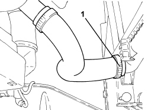
Applies to: engines: 1.4 8v; all production periods
1. Loosen the band and disconnect the radiator water inlet pipe.
2. Loosen the band and disconnect the engine cooling system supply pipe.
3. Loosen the band and disconnect the degassing pipe.
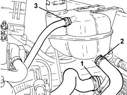
Applies to: engines: 1.4 8v; all production periods
1. Loosen the bands and disconnect the heater water supply and return pipes.
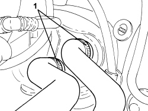
Applies to: engines: 1.4 8v; all production periods
1. Disconnect the electrical connection for the reversing light switch.
Description | Connector | |
|---|---|---|
1 | Reversing lights switch |
2. Undo the bolts and move the clutch control actuator aside.
3. Undo the nut and disconnect the earth lead.
Description | Connector | |
|---|---|---|
3 | Battery earth on engine |
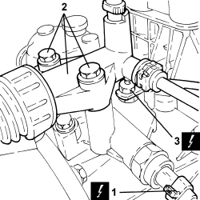
Applies to: engines: 1.4 8v; all production periods
1. Disconnect the gear selector and engagement cables.
2. Move the locking bush (2a) backwards and remove the gear selector cable (2b).
3. Move the locking bush (3a) backwards and remove the gear engagement cable (3b).
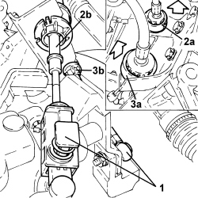
Applies to: engines: 1.4 8v; all production periods
1. Connect the electrical connection for the injection control unit.
Description | Connector | |
|---|---|---|
1 | Engine management control unit |
2. Disconnect the engine coupling.
Description | Connector | |
|---|---|---|
2 | Engine cables/engine services cable coupling |
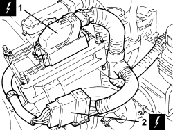
Applies to: engines: 1.4 8v; all production periods
1. Disconnect the single-acting valve from the brake servo.
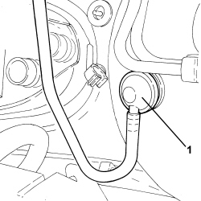
Applies to: engines: 1.4 8v; all production periods
1. Disconnect the fuel pipe rapid connector.
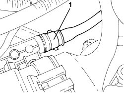
Applies to: engines: 1.4 8v; all production periods
1. Disconnect the intermediate rapid connector for the fuel vapour pipe.
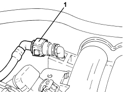
Applies to: engines: 1.4 8v; all production periods
1. Undo the bolt (1a) and move the ABS sensor (1b) from the pillar.
2. Undo the bolt securing the front suspension left track control arm to the steering knuckle
3. Unscrew the nut (3a), fit the tool (3b) and disconnect the left steering link (3c) from the knuckle.
Tool | Description | Function | Validity |
|---|---|---|---|
1871000700 | Extractor | Extracting steering rod from steering knuckle |
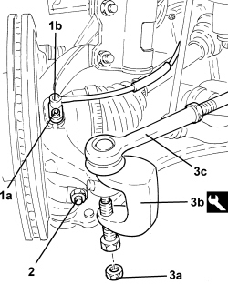
Applies to: engines: 1.4 8v; all production periods
- Proceed in the same way for the right side.
1. Disconnect the left driveshaft from the differential and secure it appropriately.
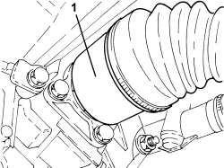
Applies to: engines: 1.4 8v; all production periods
1. Disconnect the right driveshaft from the differential and secure it appropriately.
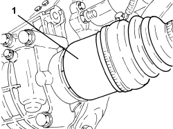
Applies to: engines: 1.4 8v; all production periods
- Lower the lift and place a suitable support underneath the power unit.
1. Fit the element (1a) on the hydraulic hoist (1b).
Tool | Description | Function | Validity |
|---|---|---|---|
1871001700 | Balance | Removing-refitting power unit |
2. Attach the power unit at the points shown in the diagram (2a), (2b) and (2c).
- Gently raise the power unit and make sure that the chains have the same tension.
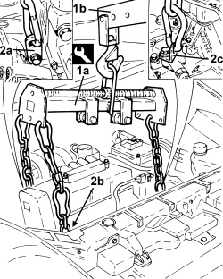
Applies to: engines: 1.4 8v; all production periods
1. Undo the bolts fixing the flexible mounting to the timing side rigid support.
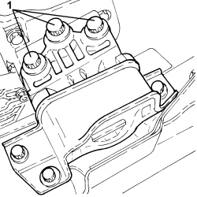
Applies to: engines: 1.4 8v; all production periods
1. Undo the bolts fixing the flexible mounting to the gearbox side rigid power unit support.
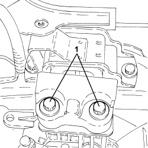
Applies to: engines: 1.4 8v; all production periods
- Lower the power unit until it rests on the board positioned previously.
- Release the power unit from the support tools.
Applies to: engines: 1.4 8v; all production periods
Refitting
Removing- Fit the support tools to the power unit.
- Place the power unit in its housing using the hydraulic hoist.
- Tighten the bolts fixing the flexible mounting to the gearbox side rigid power unit support to the recommended torque.
Component | Fastening | dia | Value (daNm) | Validity |
|---|---|---|---|---|
Gearbox side support flexible mounting to rigid support | Bolt | M12 | 9.5 ÷ 10.5 | 1.2 8v 1.4 8v 1.3 Multijet |
- Tighten the bolts fixing the flexible mounting to the timing side rigid power unit support.
Component | Fastening | dia | Value (daNm) | Validity |
|---|---|---|---|---|
Timing side power unit rigid support flexible mounting | Bolt | M10 | 5.4 ÷ 6.6 | 1.2 8v 1.4 8v |
- Remove the hydraulic hoist and tool used for supporting the power unit safely.
- Place the right driveshaft back in its housing.
- Place the left driveshaft back in its housing.
- Connect the left steering links to the knuckle and tighten the nut to the specified torque.
Component | Fastening | dia | Value (daNm) | Validity |
|---|---|---|---|---|
Steering rod to steering knuckle | Nut | M10 | 3.6 ÷ 4.4 |
- Tighten the bolt securing the front suspension left track control arm to the steering knuckle
Component | Fastening | dia | Value (daNm) | Validity |
|---|---|---|---|---|
Front suspension lower track control arm - steering knuckle side | Bolt | M10 | 5.4 ÷ 6.6 |
- Connect the ABS sensor to the knuckle and secure it using the bolt.
- Proceed in the same way for the right side.
- Connect the intermediate rapid connector for the fuel vapour pipe.
- Connect the fuel pipe rapid connector to the rail.
- Connect the single-acting valve to the brake servo.
- Connect the engine coupling.
- Connect the electrical connection for the injection control unit.
- Place the gear selector and engagement cables complete with centering bushes back in their housings.
- Connect the gear selector and engagement cables.
- Connect the battery earth lead.
- Place the hydraulic clutch actuator in position and secure it tightening the bolts to the recommended torque.
Component | Fastening | dia | Value (daNm) | Validity |
|---|---|---|---|---|
Clutch hydraulic actuator | Bolt | M8 | 1.8 ÷ 2.2 | 1.2 8v 1.4 8v 1.3 Multijet 75bhp |
- Connect the electrical connection for the reversing light switch.
- Connect the heater water supply and return pipes and secure them using the bands.
- Connect the degassing pipe and secure it using the band.
- Connect the engine cooling system supply pipe and secure it using the band.
- Connect the raidator coolant inlet pipe and secure it using the band.
- Connect the raidator coolant outlet pipe and secure it using the band.
- Connect the exhaust pipe to the flange and to the flexible mountings.
Op. 1072C44 EXHAUST MANIFOLD HEAT SHIELD - R+R
Op. 4450B12 FRONT WHEELS (TWO) - R+R
Op. 1008C32 GEARBOX LOWER REACTION ROD -R.R.
Op. 4410D17 REINFORCEMENT FOR FRONT SUSPENSION CROSSMEMBER - R.R.
Op. 0010T40 CHANGE MANUAL GEARBOX OIL
Op. 0010T20 ENGINE COOLANT - CHANGE
Op. 1048A10 AIR FILTER ASSEMBLY - R.R.
Op. 0010T64 BRAKE AND/OR CLUTCH FLUID CHECK LEVEL AND TOP UP AS NECESSARY
Op. 0010T67 HYDRAULIC CLUTCH SYSTEM - BLEED AIR
Op. 5530B52 BATTERY SUPPORT/DRIP TRAY - R.R
- Remove the vehicle from the lift.
Applies to: all engines; all production periods
Removing
RefittingPosition the vehicle on a lift.
1. Undo the fixing bolts (1a) and release the filter casing retaining springs (1b).
2. Release the cold air intake (2a) from the retaining band (2b).
3. Lift up the air filter casing, complete with cold air intake, releasing it from the oil vapour recovery hose (3a), then remove the assembly (3b).
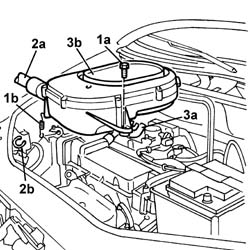
Applies to: all engines; all production periods
Removing
RefittingPlace the car on the ramp.
Disconnect the battery negative terminal.
 | Name | Connector |
|---|---|---|
- | Battery | A1 |
5530B52 Battery DRIP TRAY/SUPPORT - R.R.
7055B54 under-engine guard - r r
1. Position a suitable container under the vehicle, then remove the band (1a) and disconnect the hose (1b) in order to drain the engine cooling system.
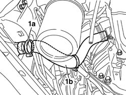
Applies to: all engines; all production periods
Removing
RefittingPosition the car on the ramp.
Disconnect the battery negative terminal.
| Name | Connector |
|---|---|---|
- | Battery | A1 |
Carry out 4450B12 front or rear wheels (two) - r+r
Carry out 7055B54 under-engine guard - r r
Carry out 7055B42 Additional FRONT WHEEL ARCH (one), left or right - R.R.
Repeat the last procedure for the left/right front wheel arch liner.
Carry out 5530B10 battery - r+r
Carry out 5530B52 Battery DRIP TRAY/SUPPORT - R.R.
1. Disconnect the electrical connection from the air flow meter.
| Name | Connector |
|---|---|---|
1 | Air flow meter | K41 |
2. Loosen the band and disconnect the the turbocharger air inlet sleeve from the rigid pipe, air flow meter side.
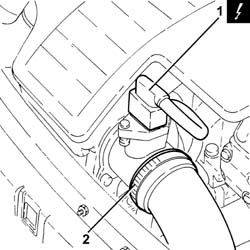
Applies to: all engines; all production periods
Removing
RefittingPlace the car on a ramp.
7055B54 under-engine guard - r r
5530B52 Battery DRIP TRAY/SUPPORT - R.R.
4450B12 front or rear wheels (two) - r+r
1048A32 sleeve from air cleaner to intake manifold - r + r
1. Undo the bolts (1a) fixing the mounting bracket, disconnect the electrical connection (1b) from the butterfly casing actuator, disconnect the cold air intake pipe (1c) from the filter casing and also disconnect the vacuum intake pipe from the attachment on the shutter valve.
| Name | Connector |
|---|---|---|
1b | Butterfly casing solenoid valve | L62 |
2. Remove the filter casing.
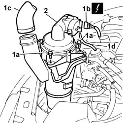
Applies to: all engines; all production periods
Removing
RefittingPosition the vehicle on the ramp.
Proceed with the removal 5530B10 battery - r+r .
Proceed with the removal 5530B52 Battery DRIP TRAY/SUPPORT - R.R. .
Proceed with the removal 4450B12 front or rear wheels (two) - r+r .
Proceed with the removal 1044B10 fuel filter assembly - r + r or replace .
Proceed with the removal 7210E22 R.R. WINDSCREEN BASE TRIM .
Proceed with the removal 7055B54 under-engine guard - r r .
Proceed with the removal 7210E10 R.R. FRONT BUMPER .
1. Disconnect the lower coolant inlet hose from the radiator, radiator side.
2. Disconnect the upper coolant inlet hose to the radiator, radiator side.
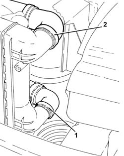
Applies to: all engines; all production periods
5530B52 Battery DRIP TRAY/SUPPORT - R.R.
4450B12 front or rear wheels (two) - r+r
7055B54 under-engine guard - r r
Position a suitable container for recovering the coolant fluid.
1. Disconnect the lower pipe from the radiator, draining the fluid into the container.
2. Disconnect the pipe from the fitting on the engine coolant reservoir (2a), from rigid pipe (2b) and heater (2c), then remove piping assembly (2d).
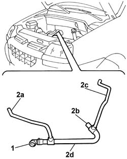
Applies to: all engines; all production periods
1048A32 sleeve from air cleaner to intake manifold - r + r
1048A10 air cleaner filtering element - replace
4130B10 power steering fluid resevoir r r
1088B10 engine cooling tank - r + r
Undo the power assisted steering fluid reservoir cap, then drain the fluid present using a special syringe.
1. Open the band (1a) and disconnect the upper radiator hose (1b).
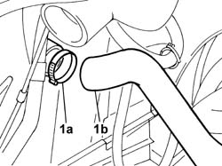
Applies to: all engines; all production periods
1. Loosen the band (1a) and disconnect the hose (1b) from the air intake.
2. Remove the air filter (2a) complete with air flow meter (2b) by releasing from the underlying pins and then from the rear fastenings.
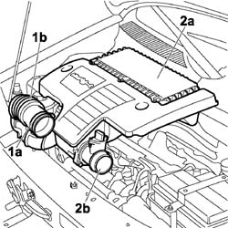
Applies to: all engines; all production periods
Position a container suitable for collecting the engine coolant.
1. Disconnect the lower engine pipe from the radiator (1a), the thermostat (1b) and the connector (1c) on the rigid section of the water pump inlet pipe.
2. Remove the lower pipe from the engine compartment.
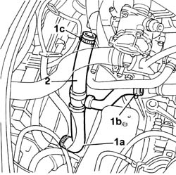
Applies to: all engines; all production periods
Drain the air conditioning system 5040A10 Air conditioning refrigerant CIRCUIT - Draining and Refilling .
Proceed with the removal 4130B10 power steering fluid resevoir r r .
Proceed with the removal 1088B10 engine cooling tank - r + r .
1. Disconnect the electrical connections from the engine cooling fans.
| Name | Connector |
|---|---|---|
1 | Engine electric fan motor | N11 |
| Name | Connector |
|---|---|---|
1 | Engine electric fan motor | N12 |
2. Release the electrical wiring from the fastenings and move it away from the fans.
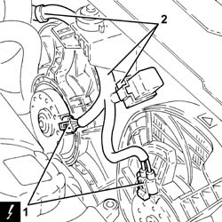
Applies to: all engines; all production periods
1. Disconnect the upper pipe from the connector on the radiator (1a) and from the thermostat (1b).
2. Remove the pipe from the engine compartment.
Remove the container for collecting the coolant from underneath the vehicle.
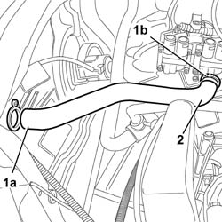
Applies to: all engines; all production periods
1. Undo the bolt (1a) fixing the fan to the radiator, undo the nut (1b) on the centre crossmember, then remove the support (1c) fastening the fan to the front crossmember.
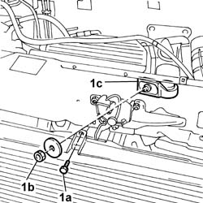
Applies to: all engines; all production periods
1. Undo the bolts (1a) and move the clutch operating cylinder (1b) aside without disconnecting the pipe.
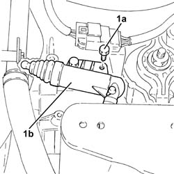
Applies to: all engines; all production periods
1. Disconnect the upper engine pipe from the radiator (1a) and the thermostat (1b).
2. Remove the upper pipe from the engine compartment.
Then remove the container used for collecting the engine coolant.
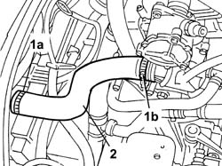
Applies to: all engines; all production periods
1. Undo the nut (1a) and remove the upper centre radiator mounting (1b).
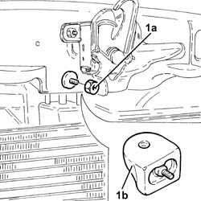
Applies to: all engines; all production periods
1. Disconnect the fluid return pipe from its fitting on the heater.
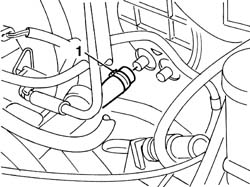
Applies to: all engines; all production periods
1. Raise the vehicle, disconnect the fan electrical connection and release the wiring from the retaining springs.
| Name | Connector |
|---|---|---|
1 | Engine electric fan motor | N11 |
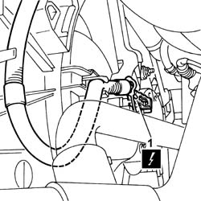
Applies to: all engines; all production periods
1. Disconnect the gear engagement/selector cables.
2. Remove the stops and release the gear engagement/selector cables from the mounting bracket.
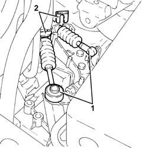
Applies to: all engines; all production periods
1. Disconnect the two heater unit coolant supply and return pipes (1a) and (1b) from the thermostat.
2. Disconnect the air vacuum pipe from the brake servo.
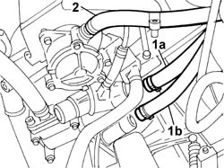
Applies to: all engines; all production periods
1. Undo the bolt (1a), loosen the bands and remove the air supply hose from the heat exchanger to the throttle casing (1b).
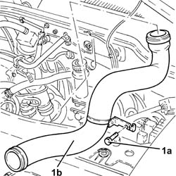
Applies to: all engines; all production periods
1. Lift up the spring (1a), release the cable from the fastening (1b) on the butterfly control device and from the bracket (1c), then place the accelerator control cable (1d) to the side.
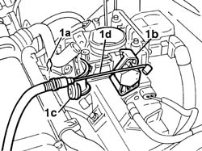
Applies to: all engines; all production periods
1. Disconnect the power assisted steering system pipe (1a) and release the band (1b) fasten ing the pipe (1c) to the bodyshell.
2. Undo the bolt fixing the power assisted steering system pipes heat exchanger.
3. Place a hydraulic column lift under the crossmember, undo the bolts (3a) and remove the crossmember (3b) complete with radiator fan assembly and power assisted steering pipes.
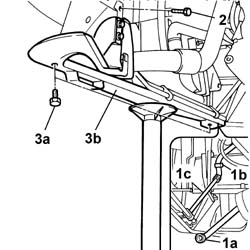
Applies to: all engines; all production periods
Carry out 5040A10 Air conditioning refrigerant CIRCUIT - Draining and Refilling
Carry out 1088D10 lower sleeve for coolant outlet from radiator - r + r
Carry out 1088D14 upper sleeve for coolant inlet to radiator - r + r
1. Usint the special tool, loosen the band (1a) and disconnect the brake servo vacuum intake pipe (1b).
 | Name | Country |
|---|---|---|
1a | Pliers | 1.881.138.000 |
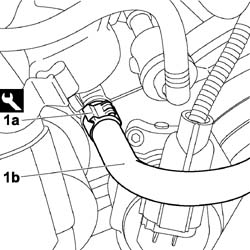
Applies to: all engines; all production periods
1. Lift up the fuse box protective cover.
2. Disconnect the electrical connections (2a) and remove the fuse box (2b).
| Name | Connector |
|---|---|---|
2a | Front/engine coupling | D4 |
3. Undo the nut and disconnect the positive terminal lead from the fuse box.
4. Turn the fuse box over and disconnect the comb type connection from the junction unit.
| Name | Connector |
|---|---|---|
4 | Engine compartment junction unit | B1 |
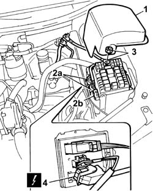
Applies to: all engines; all production periods
1. Loosen the bands and remove the air supply hose between the turbochager and the heat exchanger.
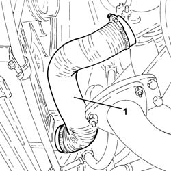
Applies to: all engines; all production periods
Undo the anchorage tabs to remove the protective cover from the junction box in the engine bay.
1. Disconnect electrical connections (1a), (1b) and (1c) by releasing the wiring from the retaining clips.
| Name | Connector |
|---|---|---|
1a | Engine compartment junction unit | B1 |
| Name | Connector |
|---|---|---|
1b | Engine compartment junction unit | B1 |
| Name | Connector |
|---|---|---|
1c | Engine compartment junction unit | B1 |
2. Undo nut (2a) and disconnect earth lead (2b) from its seat on the junction box.
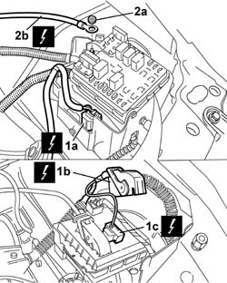
Applies to: all engines; all production periods
1080B62 catalytic converter - r + r
-Release fuel pressure through device attached to the valve at the end of the single fuel manifold pipe.
| Name | Country |
|---|---|---|
- | Rapid connector | 1.870.684.000 |
1. Disconnect the rapid attachment for the fuel supply pipe.
2. Disconnect the fuel vapour recovery pipe.
3. Disconnect the electrical connection from the fuel vapour recovery solenoid.
| Name | Connector |
|---|---|---|
3 | Fuel vapour recovery solenoid | L10 |
4. Open the bands and move the pipes disconnected previously aside.
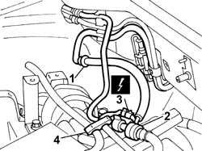
Applies to: all engines; all production periods
1. Using the special tool, loosen the bands (1a) and disconnect the passenger compartment heater engine coolant supply and return pipes (1b).
| Name | Country |
|---|---|---|
1a | Pliers | 1.881.138.000 |
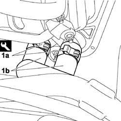
Applies to: all engines; all production periods
1. Unscrew the retaining bolts
2. Place the operating cylinder outside the working area.
3. Undo the nut (3a) and disconnect the earth lead (3b) from the gearbox.
| Name | Connector |
|---|---|---|
3b | Battery earth | C1 |
4. Disconnect the electrical connection from the reversing lights switch.
| Name | Connector |
|---|---|---|
4 | Reversing lights switch | I20 |
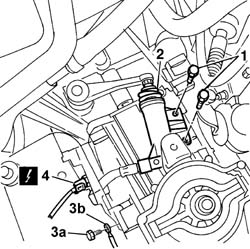
Applies to: all engines; all production periods
1. Undo the bolt (1a) and disconnect the pipe from the compressor to the condenser for the air conditioner (1b), compressor side.
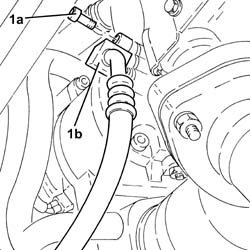
Applies to: all engines; all production periods
1. Undo nut (1a) and disconnect the earth lead (1b) from the gearbox.
2. Disconnect the electrical connection for the reversing lights.
3. Undo adjustment nut (3a) and release clutch release cable (3b) from the fitting on gearbox (3c) and place outside the working area.
| Name | Connector |
|---|---|---|
1b | Earth on engine | C40 |
| Name | Connector |
|---|---|---|
2 | Reversing lights switch | I20 |
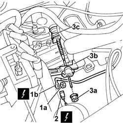
Applies to: all engines; all production periods
1. Undo the connector (1a) on the power assisted steering pump and disconnect the supply pipe (1b) to the power assisted steering pump.
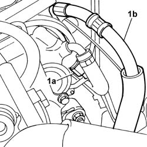
Applies to: all engines; all production periods
Undo the fuel filler cap and remove it to discharge the pressure in the system.
1. Disconnect the electrical connection from the fuel pre-heating device.
| Name | Connector |
|---|---|---|
1 | Fuel temperature sensor | K81 |
2. Working on the rapid connectors (2a) and (2b), disconnect the fuel return pipe. Seal the ends.
3. Working on the rapid connector, disconnect the fuel supply pipe. Seal the ends.
4. Using the special tool, loosen the band (4a) and disconnect the engine coolant return pipe (4b). Seal the ends.
| Name | Country |
|---|---|---|
4a | Pliers | 1.881.138.000 |
5. Disconnect the electrical connection for the water-in-fuel filter sensor.
| Name | Connector |
|---|---|---|
5 | Water in diesel filter sensor | K31 |
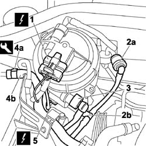
Applies to: all engines; all production periods
1. Disconnect the electrical connection from the injection control unit.
| Name | Connector |
|---|---|---|
1 | Engine management ECU | M10 |
2. Undo the nut (2a) and move the heater plugs control unit (2b) aside.
3. Undo the fixing nut (3a) and disconnect the injection earth lead (3b) from the engine compartment bulkhead.
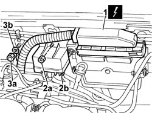
Applies to: all engines; all production periods
1. Undo the bolt (1a) and disconnect the pipe from the condenser to the drier filter (1b), condenser side.
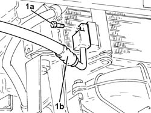
Applies to: all engines; all production periods
1. Remove both retaining clips (1a) and prise up the heads of gear engagement and selection cables (1b).
2. Withdraw the selection and engagement cables from the bracket and place outside the working area.
Applies to: all engines; all production periods
1. Open the band (1a) and disconnect the brake servo vacuum intake pipe (1b).
2. Open the bands (2a) and disconnect the heater supply and return pipes (2b).
Applies to: all engines; all production periods
1. Release the engine coolant return pipe (1c) securing clips (1a) and (1b).
2. Release the wiring (2c) from the securing clips (2a) and (2b).
3. Release the fuel supply and return pipes (3b) from the securing clip (3a).
Applies to: all engines; all production periods
1. Disconnect the two injection pump supply (1a) and return (1b) pipes from the fuel filter.
Applies to: all engines; all production periods
1. Undo the bolt fixing the power assisted steering system heat exchanger.
Applies to: all engines; all production periods
1. Unscrew plug (1a) of fuel manifold vent (1b) and position tool (1c) on the fuel manifold. Release any fuel pressure that has built up inside the manifold.
| Name | Country |
|---|---|---|
1c | Rapid connector | 1.870.684.000 |
Applies to: all engines; all production periods
1. Undo the nut (1a) and disconnect the positive battery leads (1b).
Open the junction unit casing and release the engine compartment control unit from the mountings.
2. Disconnect the engine compartment junction unit electrical connection (2a) and disconnect the dashboard cable loom connectors (2b) and (2c).
| Name | Connector |
|---|---|---|
2a | Engine compartment junction unit | B1F |
| Name | Connector |
|---|---|---|
2b | Front/engine coupling | D4A |
| Name | Connector |
|---|---|---|
2c | Front/engine coupling | D4B |
Fold the cable loom onto the power unit.
Applies to: all engines; all production periods
1. Working on the rapid connector, disconnec and release the engine coolant return pipe from the securing clip. Seal the ends.
1. Working on the rapid connector, disconnect and release the fuel supply pipe from the securing clip. Seal the ends.
3. Working on the rapid connector, disconnect and release the fuel return pipe from the securing clip. Seal the ends.
Applies to: all engines; all production periods
1. Remove the gear selection and engagement flexible transmission cable ends from the relay unit.
2. Remove the two retaining clips.
3. Withdraw the two flexible transmission cables from the mounting bracket.
Applies to: all engines; all production periods
1. Disconnect the rapid connector for the return pipe, heat exchanger side and drain the power assisted steering system fluid.
Applies to: all engines; all production periods
1. Disconect brake servo vacuum line (1a) and evaporation control system line (1b) from the throttle body.
2. Disconnect the single fuel supply pipe from the manifold.
Applies to: all engines; all production periods
1. Disconnect the reversing lights connection.
| Name | Connector |
|---|---|---|
1 | Reversing lights switch | I20 |
2. Undo the bolt (2a) and disconnect the earth lead (2b) from the bellhousing.
| Name | Connector |
|---|---|---|
2b | Battery earth | C1 |
Applies to: all engines; all production periods
1. Release the pipes from the retaining bands, then undo the fixing bolts (1a) and remove the pipe retaining duct (1b) from the engine.
Applies to: all engines; all production periods
1. Disconnect the two engine coolant pipes (1a) and (1b) from the rigid pipe and from the rigid section of the recirculation pipe.
2. Unscrew the retaining bolts
3. Remove the engine coolant reservoir.
Applies to: all engines; all production periods
1. Position a hydraulic jack under the radiator lower crossmember.
2. Undo the bolts (2a) and remove the radiator lower crossmember assembly (2b) complete with radiator (2c), fans, air conditioning condenser (2d), power assisted steering system heat exchanger (2e) and air/air heat exchanger (2f).
Applies to: all engines; all production periods
Raise the vehicle.
1. Remove the staking on the wheel hub nuts on both sides and then undo them.
2. Undo the bolts securing the struts to the damper.
3. Undo the nuts (3a) and use tool (3b) to remove the steering balljoint head from the strut.
4. Then withdraw the half-axles from the hubs and secure to the power unit using twine.
| Name | Country |
|---|---|---|
3a | Head extractor | 1.847.035.000 |
Applies to: all engines; all production periods
1. Undo the fixing bolts (1a) and move the clutch release cylinder (1b) to the side.
Applies to: all engines; all production periods
1. Disconnect the rapid connector for the return pipe from the power assisted steering circuit heat exchanger pipe.
Applies to: all engines; all production periods
Raise the ramp.
Position a suitable container for collecting the power assisted steering fluid.
1. Disconnect quick-release fitting (1a), separate both oil pipes (1b) and drain the fluid into the container.
Applies to: all engines; all production periods
1. Undo the nuts fixing the exhaust pipe support.
2. Undo the nuts (2a) and (2b) and remove the exhaust pipe mounting on the engine (2c) complete with support (2d) and flexible mounting (2e).
3. Remove the gaskets.
Applies to: all engines; all production periods
1072C44 exhaust manifold heat shield on bulkhead - r+r
1072C16 exhaust manifold with catalytic converter - r r
1008C10 power unit upper reaction link r r
1. Fit service brackets (1a) to gearbox, (1b) to the cylinder head and (1c) to the alternator mount as shown.
2. Secure the chains with hooks to the hydraulic lift device and the brackets using the hooks.
Applies to: all engines; all production periods
1. Disconnect the gear engagement/selector cables.
2. Undo the fixing bolts (2a) then move the mounting bracket (2b) complete with gear engagement/selector cables.
Applies to: all engines; all production periods
1. Undo the connector for the power assisted steering box supply pipe.
2. Loosen the band (2a), using the special tool, and disconnect the supply pipe (2b) from the power assisted steering reservoir.
| Name | Country |
|---|---|---|
2a | Pliers | 1.881.138.000 |
Applies to: all engines; all production periods
Lower the vehicle.
1. Undo the power steering fluid reservoir bolts.
2. Disconnect the two pipes (2a) and (2b) from the reservoir.
3. Remove the power steering pump fluid reservoir.
Applies to: all engines; all production periods
1. Undo the bolt (1a) and disconnect the compressor ilet pipe (1b), compressor side.
Applies to: all engines; all production periods
1. Disconnect the coolant recirculation pipe from the reservoir.
2. Undo the nuts securing the rigid power unit mount to the engine.
Applies to: all engines; all production periods
Cut the bands securing the driveshaft boots to the differential.
1. Undo the bolts securing the shock absorber strut.
2. Undo the nut (2a) and, using the tool (2b), remove the track rod end from the steering knuckle.
| Name | Country |
|---|---|---|
2b | Head extractor | 1.847.035.000 |
3. Tilt the brake disc/hub assembly outwards and disconnect the driveshafts from the differential releasing them from their housings.
Repeat the operation for the right front driveshaft.
Applies to: all engines; all production periods
Carry out 4130B10 power steering fluid resevoir r r
Carry out 1088D57 Engine coolant RETURN PIPE to SUPPLY RESERVOIR - R.R.
Carry out 1088B10 engine cooling tank - r + r
1. Undo the bolt (1a) and disconnect the pipe (1b) from the air conditioning compressor to the condenser, compressor side.
2. Undo the bolt (2a) and disconnect the pipe (2b) from the expansion valve to the compressor.
Applies to: all engines; all production periods
1. Disconnect the fluid supply pipe from the power assisted steering pump to the steering box.
Applies to: all engines; all production periods
1. Undo the bolt (1a) and disconnect the earth lead (1b) from the gearbox.
| Name | Connector |
|---|---|---|
1b | Battery earth | C1 |
2. Disconnect the electrical connection from the reversing light switch.
| Name | Connector |
|---|---|---|
2 | Reversing lights switch | I20 |
Applies to: all engines; all production periods
1. Undo the bolt securing the flexible block to the gearbox side rigid mount.
Applies to: all engines; all production periods
1008C10 power unit upper reaction link r r
1. Position a support under the power unit.
2. Position a hydraulic lift as illustrated.
Applies to: all engines; all production periods
Release the securing clips and remove the cover from the engine compartment junction unit.
1. Undo the nut and disconnect the positive supply lead for the engine compartment junction unit.
| Name | Connector |
|---|---|---|
1 | Engine compartment junction unit | B1A |
2. Using a screwdriver, remove the safety pin and disconnect the electrical connections (2a) and (2b) from the engine compartment junction unit.
| Name | Connector |
|---|---|---|
2a | Front/engine coupling | D4A |
| Name | Connector |
|---|---|---|
2b | Front/engine coupling | D4B |
3. Working on the retaining clip, release the MAXI FUSE holder for the heater plugs from the engine compartment junction unit.
| Name | Connector |
|---|---|---|
3 | Spark plugs (MAXI FUSE) fuse | B37 |
Applies to: all engines; all production periods
1. Disconnect the engine oil vapour pipe from the tappet cover.
2. Undo the bolts fixing the exhaust gas supply pipe to the E.G.R. valve.
3. Unscrew the retaining bolts
4. Remove the tappet cover incorporating the inlet ducts.
Recover the underlying gasket.
Applies to: all engines; all production periods
1. Undo the bolts (1a) and move the clutch operating cylinder (1b) aside without disconnecting the pipe.
Applies to: all engines; all production periods
Carefully lower and manoeuvre the hydraulic lift and remove the power unit from the lower part of the engine bay. Take care not to damage surrounding parts.
Rest the power unit on a platform.
Release the hooks from the brackets, raise the car, refit the hydraulic lift hooks and move the power unit away from the car.
Applies to: all engines; all production periods
1. Secure the hook (1a) to the bracket (1b) on the power assisted steering pump support.
2. Secure the hook (2a) to the bracket (2b) on the bellhousing.
Applies to: all engines; all production periods
1. Rotate the engine compartment junction unit on its hinges.
2. Disconnect the electrical connection from the engine compartment junction unit.
| Name | Connector |
|---|---|---|
2 | Engine compartment junction unit | B1F |
Applies to: all engines; all production periods
Raise the vehicle.
1. Remove the staking on the wheel hub nuts on both sides and then undo them.
2. Undo the bolts securing the struts to the damper.
3. Undo the nuts (3a) and use tool (3b) to remove the steering balljoint head from the strut.
4. Then withdraw the half-axles from the hubs and secure to the power unit using twine.
| Name | Country |
|---|---|---|
3b | Head extractor | 1.847.035.000 |
Applies to: all engines; all production periods
1. Loosen the band and disconnect the climate control system heater coolant supply pipe from the thermostat.
2. Loosen the band and disconnect the climate control system heater outlet pipe from the thermostat T connector.
3. Disconnect the vacuum pipe for the vacuum reservoir from the T connector.
4. Loosen the band and disconnect the vacuum pipe from the vacuum unit.
Applies to: all engines; all production periods
Refitting
RemovingTake the power unit off the platform and replace in the engine bay.
Release the hydraulic lift from the power unit and lower the car in order to centre the power unit.
Secure the hydraulic lift to the power unit again and raise until the engine mounts can be secured to the body.
Tighten the nuts securing the rigid timing side engine mount to the engine.
 | Fastening | Component | Ø | Value (daNm) |
|---|---|---|---|---|
- | Nut | ENGINE MOUNT TIMING SIDE | M10 x 1.25 | (Flexible mounting side) 5 |
Tighten the nut securing the flexible block to the gearbox side rigid mount to torque.
| Fastening | Component | Ø | Value (daNm) |
|---|---|---|---|---|
- | Nut | POWER UNIT GEAR BOX END RIGID MOUNT | M12 x 1.25 | (Flexible mounting side) 9 |
Connect the coolant recirculation pipe to the reservoir.
Remove the power unit support brackets fitted previously.
1008C10 power unit upper reaction link r r
1072C16 exhaust manifold with catalytic converter - r r
1072C44 exhaust manifold heat shield on bulkhead - r+r
Fit the half-axles to the wheel hubs.
Fit the steering heads to the struts and tighten the retaining nuts to torque.
| Fastening | Component | Ø | Value (daNm) |
|---|---|---|---|---|
- | Nut | ADJUSTABLE STEERING LINKS | M10 x 1.25 | 4.9 |
Tighten the bolts securing the struts to the dampers to the specified torque.
| Fastening | Component | Ø | Value (daNm) |
|---|---|---|---|---|
- | Nut | FRONT DAMPER | M10 x 1.25 | (Steering knuckle side) 12 |
Tighten the nuts securing the half-axles to the wheel hubs on both wheels to torque.
| Fastening | Component | Ø | Value (daNm) |
|---|---|---|---|---|
- | Nut | FRONT HUB WITH BEARINGS | M22 | 7 + 55° |
1. Stake the nuts securing the half-axles to the wheel hubs on both sides as shown in the figure.
Applies to: all engines; all production periods
1. Undo the fixing nuts (1a) on the rigid support and the nuts (1b) fixing the flexible mounting to the bodyshell.
2. Undo the fixing bolt on the flexible mounting reinforcement bracket.
3. Remove the flexible mounting (3a) complete with engine support (3b).
Applies to: all engines; all production periods
1. Disconnect the electrical connections from the pre-heating control unit.
| Name | Connector |
|---|---|---|
1 | Heater plugs controlunit | M15 |
Applies to: all engines; all production periods
1. Undo the retaining bolts on the reinforcing bracket on the oil sump.
2. Remove the reinforcement bracket.
3. Undo the nuts securing the exhaust pipe to the manifold.
4. Undo the bolts securing the pipe to the catalytic converter.
5. Undo the fixing bolt and release the rubber mounting, complete with bodyshell pin.
6. Remove the front exhaust pipe section.
Applies to: all engines; all production periods
1. Undo the nut (1a) and disconnect supply lead (1b) for the fuse/relay box.
| Name | Connector |
|---|---|---|
1b | Engine compartment junction unit | B1A |
2. Remove the fuse/relay box cover.
Applies to: all engines; all production periods
Lower the vehicle.
Connect the brake servo vacuum pipe and evaporation system pipe to the throttle body.
Connect the single fuel delivery pipe to the manifold.
Position the gear selection and engagement cables on the bracket
Secure the gear selection and engagement cable ends to the ball joints and secure to the bracket by means of the two clips.
Connect the clutch release cable to the gearbox and lever and tighten the adjustment nut.
Connect the reversing light electrical connection.
Connect the earth lead on the gearbox.
| Name | Connector |
|---|---|---|
- | Earth on engine | C40 |
| Name | Connector |
|---|---|---|
- | Reversing lights switch | I20 |
Connect the earth lead on the junction unit.
Connect the electrical connections to the junction unit and secure the wiring to the retaining clips.
| Name | Connector |
|---|---|---|
- | Engine compartment junction unit | B1 |
| Name | Connector |
|---|---|---|
- | Engine compartment junction unit | B1 |
| Name | Connector |
|---|---|---|
- | Engine compartment junction unit | B1 |
Fit the junction unit protective cover in the engine bay.
Position the accelerator cable on the mounting bracket and fit it on the throttle valve.
Connect the coolant return pipe to the heater.
Fit the upper pipe and connect to the thermostat and radiator.
Fit the lower coolant pipe and connect to the engine coolant reservoir, rigid pipe, radiator and heater.
7055B54 under-engine guard - r r
4450B12 front or rear wheels (two) - r+r
5530B52 Battery DRIP TRAY/SUPPORT - R.R.
Fit the air filter unit and secure it using the bolts, taking care to engage the rubber engine oil vapour pipe in the special housing in the filter casing.
Secure the air intake pipe to the retaining spring.
Secure the retaining clip to the filter casing.
0010T21 coolant check density and top up if necessary
1068A10 accelerator control cable - r + r
Remove the vehicle from the lift.
Applies to: all engines; all production periods
1. Undo the fixing nut on the flexible mounting for the gearbox side engine support.
Applies to: all engines; all production periods
1. Disconnect the electrical connection for the engine wiring/radiator prewiring coupling.
| Name | Connector |
|---|---|---|
1 | Engine cables/radiator cable coupling | D28 |
Applies to: all engines; all production periods
Position a hydraulic lift under the gearbox in order to be able to work safely.
1. Undo the centre bolt fixing the reaction rod to the bodyshell.
Applies to: all engines; all production periods
1. Lift up the fuse/relay box (1a) and remove it after having disconnected the electrical connections (1b).
| Name | Connector |
|---|---|---|
1b | Engine compartment junction unit | B1 |
2. Disconnect electrical connections (2a), (2b) and (2c).
| Name | Connector |
|---|---|---|
2a | Engine cables/radiator cable coupling | D28 |
| Name | Connector |
|---|---|---|
2b | Front/engine coupling | D4A |
| Name | Connector |
|---|---|---|
2c | Front/engine coupling | D4B |
3. Release the fuse from the fuse/relay box.
Applies to: all engines; all production periods
1. Manoeuvring the hydraulic lift, rest the power unit on the support.
Applies to: all engines; all production periods
1. Disconnect the electrical connections (1a) and (1b) from the diesel electronic injection system control unit.
| Name | Connector |
|---|---|---|
1a | Body computer | M1A |
| Name | Connector |
|---|---|---|
1b | Body computer |
Applies to: all engines; all production periods
Position a hydraulic jack beneath the engine to support it.
1. Undo the three nuts securing the support to the bodyshell.
2. Undo the two nuts securing the mount to the engine.
3. Remove the engine mount, timing side.
Applies to: all engines; all production periods
1. Disconnect the gear engagement cable.
2. Undo the bolts (2a) and move the gear selector/engagement cables mounting (2b) aside.
Applies to: all engines; all production periods
Refitting
RemovingUse the hydraulic left to position the power unit in the vehicle.
Tighten the nut fixing the gearbox side engine support to the flexible mounting to torque.
| Fastening | Component | Ø | Value (daNm) |
|---|---|---|---|---|
- | Nut | POWER UNIT GEAR BOX END RIGID MOUNT | M12 x 1.25 | (Flexible mounting side) 9 |
Position the timing side flexible mounting complete with support in the engine compartment.
Tighten the nuts fixing the timing side flexible mounting to the bodyshell.
| Fastening | Component | Ø | Value (daNm) |
|---|---|---|---|---|
- | Nut | FRONT RUBBER MOUNTS | M10 x 1.25 | (Engine side) 4,5 |
Tighten the nuts fixing the studs for the rigid support.
| Fastening | Component | Ø | Value (daNm) |
|---|---|---|---|---|
- | Nut | FRONT RUBBER MOUNTS | M12 x 1.25 | (Engine side) 5 |
Tighten the fixing bolt to the reinforcement bracket for the flexible mounting to the bodyshell.
Remove the hooks and brackets used to secure the engine.
Remove the hydraulic lift.
Remove the support under the power unit.
1008C10 power unit upper reaction link r r
Position the driveshafts in the special housings in the gearbox/differential.
Tighten the upper and lower nuts fixing the hub to the shock absorber to the recommended torque.
| Fastening | Component | Ø | Value (daNm) |
|---|---|---|---|---|
- | Nut | FRONT DAMPER | M12 x 1.25 | (Shock absorber side) 12 |
Position the steering box rods on the front steering knuckles and tighten the nuts fixing the track rod ends to the recommended torque.
| Fastening | Component | Ø | Value (daNm) |
|---|---|---|---|---|
- | Nut | ADJUSTABLE LINK BALL JOINTS | M10 x 1.25 | 3.4 |
Lock the driveshaft boots with new bands.
Position the mounting bracket, complete with gear engagement/selector cables, and tighten the fixing bolts.
Connect the gear engagement/selector cables.
Position the clutch release cylinder and tighten the fixing bolts.
Position the battery earth lead on the gearbox and tighten the fixing bolt.
| Name | Connector |
|---|---|---|
- | Battery earth | C1 |
Connect the reversing lights connection.
| Name | Connector |
|---|---|---|
- | Reversing lights switch | I20 |
Position the cable loom on the power unit and connect the electrical connection for the engine compartment junction unit.
| Name | Connector |
|---|---|---|
- | Engine compartment junction unit | B1F |
Connect the dashboard cable loom connectors.
| Name | Connector |
|---|---|---|
- | Front/engine coupling | D4A |
| Name | Connector |
|---|---|---|
- | Front/engine coupling | D4B |
Position the engine compartment junction unit and secure it in place, then close the junction unit casing.
Connect the positive battery lead and tighten the fixing nut.
Connect the brake servo vacuum pipe and secure it using the band.
Connect the heater supply and return pipes and close the bands.
Connect the electrical connection from the fuel vapour recovery solenoid.
| Name | Connector |
|---|---|---|
- | Fuel vapour recovery solenoid | L10 |
Connect the fuel vapour recovery pipe.
Connect the rapid attachment for the fuel supply pipe.
Close the pipe retaining band.
1080B62 catalytic converter - r + r
Using the hydraulic lift, position the power assisted steering pipes and radiator fan crossmember assembly in the engine compartment.
Tighten the bolts fixing the crossmember to the bodyshell to the recommended torque.
| Fastening | Component | Ø | Value (daNm) |
|---|---|---|---|---|
- | Bolt | COOLANT RADIATOR SUPPORT BEAM | M10 | 5.6 |
Tighten the bolt fixing the power assisted steering system pipes and heat exchanger.
Connect the power assisted steering system pipe and close the band fastening the pipe to the bodyshell.
Connect the electrical connection for the fan and close the wiring retaining springs.
| Name | Connector |
|---|---|---|
- | Engine electric fan motor | N11 |
Fit the fan/radiator retaining support in the vehicle compartment and tighten the nut fixing it to the front crossmember.
Tighten the bolt fixing the fan support to the radiator.
Connect the upper radiator hose and close the band.
1088B10 engine cooling tank - r + r
4130B10 power steering fluid resevoir r r
1048A10 air cleaner filtering element - replace
1048A32 sleeve from air cleaner to intake manifold - r + r
7055B54 under-engine guard - r r
5530B52 Battery DRIP TRAY/SUPPORT - R.R.
0010T71 power steering fluid check level and top up if necessary
Connect the battery negative terminal.
| Name | Connector |
|---|---|---|
- | Battery | A1 |
Remove the car from the ramps.
Applies to: all engines; all production periods
1. Disconnect the electrical connection from the reversing lights switch.
| Name | Connector |
|---|---|---|
1 | Reversing lights switch | I20 |
2. Undo the bolt (2a) and disconnect the battery earth lead (2b) from the gearbox.
| Name | Connector |
|---|---|---|
2b | Battery earth | C1 |
Applies to: all engines; all production periods
1. Positino the brackets on the support for the injection pump and on the gearbox for supporting the power unit.
2. Secure the metal cables to the brackets positioned previously.
3. Prepare a hydraulic lift and secure the metal cables for supporting the engine during the removal operation to it.
Tension the metal cables and remove the hydraulic jack from underneath the vehicle.
4. Undo the nut fixing the mounting to the gearbox side engine support, lower the lift and remove the power unit.
Applies to: all engines; all production periods
1. Undo the nuts (1a) and remove the protection (1b).
Applies to: all engines; all production periods
1. Using the special tool, loosen the band (1a) and disconnect the air supply pipe from the heat exchanger to the intake manifold (1b) from the pipe (1c).
Move the end of the hose aside to free the work area.
| Name | Country |
|---|---|---|
1a | Pliers | 1.881.138.000 |
Applies to: all engines; all production periods
Carefully lower and manoeuvre the hydraulic lift and remove the power unit from the lower part of the engine bay. Take care not to damage surrounding parts.
Rest the power unit on a platform.
Release the hooks from the brackets, raise the lift, reattach the hydraulic lift hooks and move the power unit away from the vehicle.
Applies to: all engines; all production periods
1. Disconnect the electrical connections (1a) and (1b) from the diesel electronic injection system control unit.
| Name | Connector |
|---|---|---|
1a | Engine management ECU | M10A |
| Name | Connector |
|---|---|---|
1b | Engine management ECU | M10B |
2. Undo nut (2a) and disconnect earth lead (2b).
| Name | Connector |
|---|---|---|
2b | Earth on engine | C60 |
Applies to: all engines; all production periods
1. Using the special tool, loosen the band (1a) and disconnect the air supply hose (1b) between the turbocharger and the heat exchanger.
2. Undo the bolts (2a) and remove the air supply pipe (2b) from the turbine to the heat exchanger.
| Name | Country |
|---|---|---|
1a | Pliers | 1.881.138.000 |
Applies to: all engines; all production periods
Refitting
RemovingTake the power unit off the platform and replace in the engine bay.
Release the hydraulic jack from the power unit and lower the vehicle so that the power unit is centered.
Secure the hydraulic lift to the power unit again and raise until the engine mounts can be secured to the body.
Tighten the nut fixing the gearbox side flexible engine mounting to torque.
| Fastening | Component | Ø | Value (daNm) |
|---|---|---|---|---|
- | Nut | POWER UNIT GEAR BOX END RIGID MOUNT | M10 | 5 |
Position a hydraulic jack for supporting the enigne under the oil sump.
Remove the mounting brackets and the cables secured to them.
Fit the rigid engine support complete with flexible mounting.
Tighten the nuts fixing the rigid support to the bodyshell.
| Fastening | Component | Ø | Value (daNm) |
|---|---|---|---|---|
- | Nut | ENGINE MOUNT TIMING SIDE | M10 x 1.25 | (Bodyshell side) 4.3 |
Tighten the nuts fixing the rigid support to the engine to torque.
| Fastening | Component | Ø | Value (daNm) |
|---|---|---|---|---|
- | Nut | ENGINE MOUNT TIMING SIDE | M10 x 1.25 | (Engine side) 5 |
Fit the power assisted steering fluid mounting bracket and tighten the two fixing bolts.
Position the coolant expansion tank and tighten the fixing bolts.
Tighten the centre bolt fixing the reaction rod to the bodyshell to torque.
| Fastening | Component | Ø | Value (daNm) |
|---|---|---|---|---|
- | Bolt | REACTION ROD | M12 x 1.25 | 12. |
Fit the front section of the exhaust pipe.
Tighten the nuts fixing the exhaust pipe to the manifold to torque.
| Fastening | Component | Ø | Value (daNm) |
|---|---|---|---|---|
- | Nut | EXHAUST PIPE TO ENGINE | M8 | (Exhaust manifold) 3 |
Tighten the nuts fixing the pipe to the catalytic converter to torque.
| Fastening | Component | Ø | Value (daNm) |
|---|---|---|---|---|
- | Nut | EXHAUST PIPE TO ENGINE | M8 | (catalytic converter) 3 |
Tighten the bolt fixing the rubber mounting, complete with pin, to the bodyshell.
Tighten the nuts fixing the reinforcement bracket to the oil sump.
Tighten the bolts securing the shock absorber strut to the specified torque.
| Fastening | Component | Ø | Value (daNm) |
|---|---|---|---|---|
- | Nut | FRONT HUB STEERING KNUCKLE. | M12 x 1.25 | 12. |
Fit the steering tie-rod end in its seating.
Tighten the nut to the specified torque.
| Fastening | Component | Ø | Value (daNm) |
|---|---|---|---|---|
- | Nut | ADJUSTABLE LINK BALL JOINTS | M10 x 1.25 | 4.9 |
Tighten the wheel hub nut to torque.
| Fastening | Component | Ø | Value (daNm) |
|---|---|---|---|---|
- | Nut | FRONT HUB WITH BEARINGS | M22 | 7 + 55° |
1. Stake the nut in accordance with the illustration below.
Applies to: all engines; all production periods
1. Undo the nut (1a) and move the heater plugs control unit (1b) aside.
2. Undo the nuts (2a) fixing the cable duct (2b).
3. Release the wiring, complete with electrical connections, from the engine compartment bulkhead.
Applies to: all engines; all production periods
Carry out 1076B10 exhaust pipe assembly - r + r
Carry out 2710A40 l/h or r/h drive shaft (one) - r + r
Repeat the last procedure on the left/right front driveshaft.
Position a support under the power unit.
1. Position a hydraulic lift under the power unit and crossmember (1a) complete with four suitable length chains fitted with spring catches.
2. Attach a spring catch to the bracket on the timing side support.
3. Attach a spring catch to the bracket at the back of the engine.
4. Attach a spring catch to the bracket at the front of the engine.
5. Attach a spring catch to the bracket on the gearbox casing.
6. Working on the adjustment bar, balance the crossmember so that all four chains are tensioned.
| Name | Country |
|---|---|---|
1 | Compensator | 1.871.001.700 |
Applies to: all engines; all production periods
7055B64 Engine compartment DUST shield in front wheel arch (one), left or right - R.R. (only for the right side)
Lower the lift.
Fit a new gasket to the cam cover.
Fit the tappet cover incorporating the inlet ducts, tightening the bolts to torque.
| Fastening | Component | Ø | Value (daNm) |
|---|---|---|---|---|
- | Bolt | CAM COVER | M6 | 1 |
Connect the engine oil vapour pipe to the cam cover.
Tighten the bolts fixing the exhaust gas supply pipe to the E.G.R. valve to torque.
| Fastening | Component | Ø | Value (daNm) |
|---|---|---|---|---|
- | Bolt | EGR VALVE PIPE | M8 | (EGR valve) 2.5 |
Connect the fluid supply pipe from the power assisted steering pump to the steering box.
Connect the two power assisted steering fluid pipes to the reservoir.
Secure the fluid reservoir to the mounting bracket and tighten the fixing bolts.
Secure the power assisted steering fluid pipe fixing the retaining bracket to the bodyshell.
Connect the recirculation pipe from the coolant reservoir to the rigid section fixed to the head.
Connect the connecting pipe for the engine coolant reservoir to the water pump rigid inlet pipe.
Position the two gearbox transmission cables on the mounting bracket.
Fasten the two transmission cables to the bracket, engaging the two springs.
Secure the gear selection and engagement flexible cable ends on the relay unit.
Connect the two injection pump supply and return pipes to the fuel filter.
Connect the electrical connection for the injection control unit.
| Name | Connector |
|---|---|---|
- | Engine management ECU | M10 |
Fit the heater plugs control unit to the engine compartment bulkhead and secure it using the nut.
Tighten the fixing nut and connect the injection earth lead to the engine compartment bulkhead.
Connect the electrical connection for the reversing lights switch.
| Name | Connector |
|---|---|---|
- | Reversing lights switch | I20 |
Connect the earth lead to the gearbox.
| Name | Connector |
|---|---|---|
- | Battery earth | C1 |
Fit the operating cylinder in the special housing on the gearbox and tighten the fixing bolt to torque.
| Fastening | Component | Ø | Value (daNm) |
|---|---|---|---|---|
- | Bolt | CLUTCH CONTROL HYDRAULIC ACTIVATOR | M8 | 2.8 |
Turn the fuse box over and connect the connections disconnected previously.
| Name | Connector |
|---|---|---|
- | Engine compartment junction unit | B1 |
Connect the positive terminal lead to the fuse box.
Position the fuse box protective cover.
Connect the brake servo vacuum air pipe.
Connect the heater unit coolant supply and return pipes to the thermostat.
Fit the upper pipe in the engine compartment.
Connect the upper engine pipe to the radiator and the thermostat.
Fit the lower pipe in the engine compartment.
Connect the lower engine pipe to the radiator, the thermostat and the rigid section of the water pump inlet pipe.
Fit the complete air filter casing.
Connect the integrated throttle casing actuator vacuum pipe .
Tighten the filter bracket securing bolts and connect the cold air intake pipe to the casing.
Connect the electrical connection to the integrated throttle body actuator.
| Name | Connector |
|---|---|---|
2b | Butterfly casing solenoid valve | L62 |
Top up the fluid level in the power steering reservoir.
 | Type | Component | Name | Qty. |
|---|---|---|---|---|
- | Oli [l] | POWER ASSISTED STEERING CIRCUIT | TUTELA GI/A | - |
1048A32 sleeve from air cleaner to intake manifold - r + r
4450B12 front or rear wheels (two) - r+r
5530B52 Battery DRIP TRAY/SUPPORT - R.R.
7055B54 under-engine guard - r r
Remove the vehicle from the ramp.
Applies to: all engines; all production periods
1. Disconnect the rapid connector for the fuel return pipe (1a), fuel erturn manifold pipe side and release the actual pipe from the fastening (1b).
Applies to: all engines; all production periods
Carry out 1008C30 power unit lower reaction link r r
Carry out 1008B10
1. Undo the nut fixing the gearbox side power unit rigid support to the flexible mounting.
Applies to: all engines; all production periods
1. Remove the bevel and undo the nut fixing the driveshafts to the wheel hubs.
Applies to: all engines; all production periods
Manoeuvring the hydraulic hoist, slowly lower the power unit on the stand positioned previously and make sure that it is stable.
Applies to: all engines; all production periods
1. Undo the nuts (1a) and disconnect the track rods (1b) from the steering knuckles usiing the tool (1c).
| Name | Country |
|---|---|---|
1c | Head extractor | 1.847.035.000 |
Applies to: all engines; all production periods
Refitting
RemovingPlace the power unit in its housing in the engine compartment using a hydraulic lift.
1. Tighten the nut securing the gearbox side rigid power unit support to the flexible mounting to the recommended torque.
| Fastening | Component | Ø | Value (daNm) |
|---|---|---|---|---|
1 | Nut | POWER UNIT GEAR BOX END RIGID MOUNT | M12 | (Flexible mounting side) 8.1 ÷ 9.9 |
Applies to: all engines; all production periods
1. Undo the bolts fixing the intermediate driveshaft to the support.
Applies to: all engines; all production periods
Carry out 1008B10
Carry out 1008C30 power unit lower reaction link r r
Remove the support positioned under the power unit.
Release the chains and remove the crossmember used for supporting the power unit.
Carry out 2710A40 l/h or r/h drive shaft (one) - r + r
Repeat the last procedure on the left/right front driveshaft.
Carry out 1076B10 exhaust pipe assembly - r + r
Carry out 1088D14 upper sleeve for coolant inlet to radiator - r + r
Connect the air supply hose from the turbine to the heat exchanger and, using the special tool, tighten the bands.
| Name | Country |
|---|---|---|
- | Pliers | 1.881.138.000 |
Connect the battery earth lead to the gearbox and tighten the fixing bolt.
| Name | Connector |
|---|---|---|
- | Battery earth | C1 |
Connect the electrical connection for the reversing lights switch.
| Name | Connector |
|---|---|---|
- | Reversing lights switch | I20 |
Connect the electrical connections to the diesel electronic injection control unit.
| Name | Connector |
|---|---|---|
- | Body computer |
| Name | Connector |
|---|---|---|
- | Body computer | M1A |
Connect the engine cables/radiator prewiring coupling electrical connection.
| Name | Connector |
|---|---|---|
- | Engine cables/radiator cable coupling | D28 |
Connect the electrical connections to the pre-heating control unit.
| Name | Connector |
|---|---|---|
- | Heater plugs controlunit | M15 |
Connect the electrical connection to the engine compartment junction box.
| Name | Connector |
|---|---|---|
- | Engine compartment junction unit | B1F |
Rotate the junction unit and place it in position.
1. Connect the positive supply lead for the engine compartment junction unit and tighten the fixing nut.
| Name | Connector |
|---|---|---|
1 | Engine compartment junction unit | B1A |
2. Connect the electrical connections (2a) and (2b) to the engine compartment junction unit.
| Name | Connector |
|---|---|---|
2a | Front/engine coupling | D4A |
| Name | Connector |
|---|---|---|
2b | Front/engine coupling | D4B |
3. Position the MAXI FUSE holder for the heater plugs in the engine compartment junction unit.
| Name | Connector |
|---|---|---|
3 | Spark plugs (MAXI FUSE) fuse | B37 |
Applies to: all engines; all production periods
1. Release and remove the right driveshaft (1a) complete with intermediate driveshaft (1b).
2. Remove the dust excluder.
Applies to: all engines; all production periods
Position the junction unit cover.
Remove the protective plugs and connect the pipe from the expansion valve to the compressor and tighten the bolt to the recommended torque.
| Fastening | Component | Ø | Value (daNm) |
|---|---|---|---|---|
- | Bolt | EXPANSION VALVE - COMPRESSOR PIPE | M6 | (Compressor side) 0.7 ÷ 1.1 |
Remove the protective plugs and connect the pipe from the air conditioning compressor to the condenser, compressor side and tighten the bolt to the recommended torque.
| Fastening | Component | Ø | Value (daNm) |
|---|---|---|---|---|
- | Bolt | PIPES FROM COMPRESSOR TO CONDENSOR | M6 | (Compressor side) 0.7 ÷ 1.1 |
Carry out 1088D57 Engine coolant RETURN PIPE to SUPPLY RESERVOIR - R.R.
Carry out 1088B10 engine cooling tank - r + r
Carry out 4130B10 power steering fluid resevoir r r
Connect the supply pipe from the tank to the power assisted steering pump and tighten the bands using the special tool.
| Name | Country |
|---|---|---|
- | Pliers | 1.881.138.000 |
Tighten the connector for the supply pipe from the pump to the power assisted steering box to the recommended torque.
| Fastening | Component | Ø | Value (daNm) |
|---|---|---|---|---|
- | Connector | EXPANSION VALVE - COMPRESSOR PIPE | M16 | (Power assisted steering pump side) 3.6 ÷ 4.4 |
Remove the sealing plug from the ends and, working on the rapid connector, connect the fuel supply pipe to the high pressure pump.
Remove the sealing plug from the ends and, working on the rapid connector, connect the fuel return pipe.
Remove the sealing plug from the ends and, working on the rapid connector, connect the engine coolant return pipe.
Place the pipe retaining duct in position and tighten the fixing bolts.
Remove the sealing plug from the end on the engine coolant reservoir.
Connect the engine coolant return pipe to the expansion tank and tighten the fastening band using the special tool.
| Name | Country |
|---|---|---|
- | Pliers | 1.881.138.000 |
Connect the electrical connection to the water-in-fuel filter presence sensor.
| Name | Connector |
|---|---|---|
- | Water in diesel filter sensor | K31 |
Remove the sealing plugs from the ends and, working on the rapid connectors, connect the fuel return pipe to the filter and to ghte pipe from the tank.
Remove the sealing plug from the ends and, working on the rapid connector, connect the fuel supply pipe to the filter.
Connect the electrical connection to the fuel pre-heating device.
| Name | Connector |
|---|---|---|
1 | Fuel temperature sensor | K81 |
Fit the fuel supply and return pipes to the securing clips.
Fit the engine coolant return pipe and the wiring on the securing clips.
Connect the passenger compartment heater engine coolant supply and return pipes and tighten the fastening bands using the special tool.
| Name | Country |
|---|---|---|
- | Pliers | 1.881.138.000 |
Attach the gear selection/engagement cables to the mounting bracket and refit the clips.
Carry out 1088D14 upper sleeve for coolant inlet to radiator - r + r
Carry out 1088D10 lower sleeve for coolant outlet from radiator - r + r
Carry out 5040A10 Air conditioning refrigerant CIRCUIT - Draining and Refilling
Position the clutch operating cylinder and tighten the fixing bolts.
Connect the gear engagement/selector cables.
1. Disconnect the gear engagement/selector cables.
Connect the brake servo vacuum intake pipe and tighten the fastening band using the special tool.
| Name | Country |
|---|---|---|
- | Pliers | 1.881.138.000 |
Refit and tighten the fuel filler cap.
Place the air filter complete with air flow meter in position fitting it on the rear fastening and then on the lugs underneath.
Connect the hose to the air intake on the crossmember and tighten the securing band.
Connect the air intake hose to the turbocharger, air flow meter side, and tighten the band.
Connect the electrical connection to the air flow meter.
| Name | Connector |
|---|---|---|
- | Air flow meter | K41 |
Carry out 5530B52 Battery DRIP TRAY/SUPPORT - R.R.
Carry out 5530B10 battery - r+r
Carry out 7055B42 Additional FRONT WHEEL ARCH (one), left or right - R.R.
Repeat the last procedure for the left/right front wheel arch liner.
Carry out 7055B54 under-engine guard - r r
Carry out 4450B12 front or rear wheels (two) - r+r
Connect the battery negative terminal.
| Name | Connector |
|---|---|---|
- | Battery | A1 |
Remove the car from the ramps.
Applies to: all engines; all production periods
1. Release and remove the left driveshaft.
Applies to: all engines; all production periods
1. Position a hydraulic jack under the gearbox.
2. Undo the bolts (2a) and (2b) and remove the power unit reaction rod (2c).
Remove the hydraulic jack from under the gearbox.
Applies to: all engines; all production periods
1. Position the bracket (1a) and secure it with the bolt (1b) positioned in place of one of the bolts fixing the clutch operating cyliner.
Applies to: all engines; all production periods
Position a hydraulic jack under the engine.
1. Undo the nuts (1a) and the bolts (1b) and remove the plate connecting the timing side rigid engine support to the air casing.
Applies to: all engines; all production periods
1. Fit the tool (1a) on the pressure pump support and secure it using the nuts (1b).
| Name | Country |
|---|---|---|
1a | Mount | 1.860.625.000 |
2. Using a hydraulic hoist (2a), support the power unit with suitable chains (2b) fastened at the three points illustrated in the diagram.
Remove the hydraulic jack previously positioned under the engine.
Applies to: all engines; all production periods
1. Undo the bolt fixing the timing side power unit front flexible mounting.
Applies to: all engines; all production periods
1. Undo the nut fixing the flexible mount to the gearbox side power unit rigid support.
Applies to: all engines; all production periods
1. Undo the connector (1a) and disconnect the pipe from pump to power steering box (1b), steering box side.
2. Release the pipe from the pump to the steering box, from the fastening band on the front suspension crossmember.
Applies to: all engines; all production periods
1. Position a suitable work bench (1a) under the power unit (1b), the slowly lower it using a hydraulic hoist until it is resting on the bench.
Applies to: all engines; all production periods
Release the hydraulic hoist's chains from the power unit.
Raise the car on a lift.
1. Using the hydrualic hoist fitted with suitable chains as described above, support the power unit safely.
Applies to: all engines; all production periods
Refitting
RemovingRelease the hydraulic hoist's chains from the power unit.
Lower the car with the lift.
Through the engine compartment, support the power unit with the hydraulic hoist fitted with suitable chains.
Slowly lift the power unit with the hydraulic hoist until it is resting in its seating in the engine compartment.
1. Connect the pipe from the pump to the power steering box (1a), power steering box side and tighten the connector (1b) to the specified torque.
| Fastening | Component | Ø | Value (daNm) |
|---|---|---|---|---|
1b | Connector | PIPE BTWN PUMP + POWER STEERING BOX | M14 | (Power assisted steering box side) 3.6 ÷ 4.4 |
2. Secure the pipe from pump to power steering box to the front suspension crossmember using the fastening band.
Applies to: all engines; all production periods
1. Tighten the nut fixing the power unit gearbox side rigid support flexible mounting to the recommended torque.
| Fastening | Component | Ø | Value (daNm) |
|---|---|---|---|---|
1 | Nut | POWER UNIT GEAR BOX END RIGID MOUNT | M12 | (Flexible mounting side) 8.1 ÷ 9.9 |
Applies to: all engines; all production periods
1. Tighten the bolt fixing the timing side power unit front support flexible mounting to the recommended torque.
| Fastening | Component | Ø | Value (daNm) |
|---|---|---|---|---|
1 | - | - | - | - |
Applies to: all engines; all production periods
Position a hydraulic jack under the engine.
Release the hydraulic hoist's chains from the power unit.
Undo the nuts and remove the tool from the pressure pump support.
| Name | Country |
|---|---|---|
- | Mount | 1.860.625.000 |
Place the plate connecting the timing side rigid engine support to the air chamber back in its housing and tighten the nuts and bolts.
Remove the hydraulic jack positioned previously under the engine.
Undo the bolt and remove the power unit mounting bracket from the gearbox.
1. Position a hydraulic jack under the gearbox.
2. Place the power unit reaction rod (2a) back in its housing and fix it tightening the bolts (2b) and (2c) to the recommended torque.
| Fastening | Component | Ø | Value (daNm) |
|---|---|---|---|---|
2b | Bolt | REACTION ROD | M12 | (Gearbox side) 7.2 ÷ 8.8 |
| Fastening | Component | Ø | Value (daNm) |
|---|---|---|---|---|
2c | Bolt | REACTION ROD | M12 | (Front suspension crossmember side) 11.4 ÷ 12.6 |
Applies to: all engines; all production periods
Place the left driveshaft back in its housing.
Place the right driveshaft complete with intermediate driveshaft and dust cover back in its housing.
1. Tighten the bolt fixing the intermediate driveshaft to the support to the recommended torque.
| Fastening | Component | Ø | Value (daNm) |
|---|---|---|---|---|
1 | - | - | - | - |
Applies to: all engines; all production periods
1. Connect the steering rods (1a) to the steering knuckles and tighten the nuts (1b) to the recommended torque.
| Fastening | Component | Ø | Value (daNm) |
|---|---|---|---|---|
1b | Nut | POWER STEERNG BOX LINKS | M10 | (Wheel damper side) 4.5 ÷ 5.5 |
Applies to: all engines; all production periods
1. Tighten the nuts (1a) fixing the front wheel hubs to the driveshafts to the recommended torque using the angular tightening tool (1b).
| Fastening | Component | Ø | Value (daNm) |
|---|---|---|---|---|
1a | Nut | DRIVESHAFT | M22 | (Wheel hub side) 7.0 + 55° |
| Name | Country |
|---|---|---|
1b | Protractor | 1.860.942.000 |
Applies to: all engines; all production periods
1. Bevel the collar of the nut in two places as shown in the figure.
Applies to: all engines; all production periods
Connect the rapid connector for the fuel return pipe, fuel manifold pipe side and secure the actual pipe.
Position the wiring complete with electrical connections via the opening in the engine compartment bulkhead.
Tighten the cable duct fixing nuts.
Place the heater plugs control unit back in its housing and secure it using the nut.
Connect the earth lead and tighten the nut.
Connect the electrical connections to the diesel electronic injection control unit.
Place the protection back in its housing and fix it using the nuts.
Place the gear selector/engagement cables mounting back in its housing and secure it using the bolts.
Connect the gear engagement cable.
Connect the electrical connections to the fuse/relay box and place it back in its housing.
Place the fuse/relay box cover back in its housing.
Connect the supply lead for the fuse/relay box and secure it using the nut.
Connect the vacuum pipe to the vacuum unit and tighten the band.
Connect the vacuum pipe for the vacuum reservoir to the T connector.
Connect the climate control system heater outlet pipe to the thermostat T connector and tighten the band.
Connect the coolant supply pipe to the climate control system heater to the thermostat and tighten the band.
1. Place the clutch operating cylinder (1a) back in its housing and secure it tightening the bolts (1b) to the recommended torque.
| Fastening | Component | Ø | Value (daNm) |
|---|---|---|---|---|
1b | Bolt | CLUTCH SLAVE CYLINDER | M8 | (Gearbox side) 2.5 ÷ 3.1 |
Applies to: all engines; all production periods
Connect the electrical connection to the reversing light switch.
Connect the battery earth lead to the gearbox and tighten the bolt.
1. Connect the compessor inlet pipe (1a), compressor side and secure it tightening the bolt (1b) to the recommended torque.
| Fastening | Component | Ø | Value (daNm) |
|---|---|---|---|---|
1b | Bolt | INLET LINE TO COMPRESSOR | M6 | (Compressor side) 0.7 ÷ 1.1 |
Applies to: all engines; all production periods
1. Place the exhaust pipe mounted on the engine (1a), complete with gaskets, back in its housing and secure it tightening the nuts (1b) and (1c) to the recommended torque.
| Fastening | Component | Ø | Value (daNm) |
|---|---|---|---|---|
1b | Nut | EXHAUST PIPE TO ENGINE | M8 | (Catalytic converter side) 2.7 ÷ 3.3 |
| Fastening | Component | Ø | Value (daNm) |
|---|---|---|---|---|
1c | Nut | EXHAUST PIPE TO ENGINE | M8 | (Hose side) 2.7 ÷ 3.3 |
2. Tighten the nuts fixing the exhaust pipe mounting.
Applies to: all engines; all production periods
Using a hydraulic jack, place the lower radiator crossmember assembly back in its housing complete with radiator, fans, air conditioning condenser, power assisted steering system heat exchanger and air/air heat exchanger and secure it using the bolts.
Connect the rapid connector for the return pipe, heat exchanger side.
Tighten the bolt fixing the power assisted steering system heat exchanger.
1. Connect the pipe from the condenser to the drier filter (1a), condenser side and fix it tightening the bolt (1b) to the recommended torque.
| Fastening | Component | Ø | Value (daNm) |
|---|---|---|---|---|
1b | Bolt | PIPE FROM CONDENSER TO FILTER/DEHYDRATOR | M6 | (Condenser side) 0.7 ÷ 1.1 |
Applies to: all engines; all production periods
1. Connect the pipe from the air conditioning compressor to the condenser (1a), compressor side and secure them tightening the bolt (1b) to the recommended torque.
| Fastening | Component | Ø | Value (daNm) |
|---|---|---|---|---|
1b | Bolt | PIPES FROM COMPRESSOR TO CONDENSOR | M6 | (Compressor side) 0.7 ÷ 1.1 |
Applies to: all engines; all production periods
Place the air supply hose between the turbocharger and the heat exchanger back in its housing and tighten the bands.
Place the air supply hose from the heat exchanger to the throttle casing back in its housing and tighten the bands and the bolts.
Place the upper centre radiator support in its housing and secure it using the nut.
Place the electrical wiring back in its housing and connect the electrical connections to the engine cooling fans.
Proceed with the refitting 1088B10 engine cooling tank - r + r .
Proceed with the refitting 4130B10 power steering fluid resevoir r r .
Refill the air conditioning system 5040A10 Air conditioning refrigerant CIRCUIT - Draining and Refilling .
Connect the upper coolant inlet hose to the radiator, radiator side.
Connect the lower coolant outlet hose from the radiator, radiator side.
Proceed with the refitting 7210E10 R.R. FRONT BUMPER .
Proceed with the refitting 7055B54 under-engine guard - r r .
Proceed with the refitting 7210E22 R.R. WINDSCREEN BASE TRIM .
Proceed with the refitting 1044B10 fuel filter assembly - r + r or replace .
Proceed with the refitting 4450B12 front or rear wheels (two) - r+r .
Proceed with the refitting 5530B52 Battery DRIP TRAY/SUPPORT - R.R. .
Proceed with the refitting 5530B10 battery - r+r .
Refill the engine cooling system with coolant 0010T20 coolant change .
Refill the power assisted steering system circuit using the recommended fluid.
| Type | Component | Name | Qty. |
|---|---|---|---|---|
- | Oli [l] | POWER ASSISTED STEERING CIRCUIT | TUTELA GI/A | 1.3 |
Bleed the power steerign system as described below.
With the front wheels raised off the ground, with the engine switched off, carry out 4-5 complete steering wheel rotation cycles (left and right).
Check and, if necessary, top up the fluid level in the reservoir.
Position the vehicle on the ground and start up the engine.
Carry out 4 - 5 complete steering wheel rotations (right and left).
Top up the fluid level in the reservoir.
Topics linked from this page (38)
- 0010T20 coolant change
- 0010T21 coolant check density and top up if necessary
- 0010T40 change manual gearbox oil
- 0010T64 brake and or clutch fluid check level and top up as necessary
- 0010T67 hydraulic clutch system bleed air
- 0010T71 power steering fluid check level and top up if necessary
- 1008b10 power unit front mount (timing side) flexible block - replace
- 1008C10 power unit upper reaction link r r
- 1008C30 power unit lower reaction link r r
- 1008C32 GEARBOX LOWER REACTION ROD ' -R.R.
- 1044B10 fuel filter assembly - r + r or replace
- 1048A10 air cleaner filtering element - replace
- 1048A32 sleeve from air cleaner to intake manifold - r + r
- 1068A10 accelerator control cable - r + r
- 1072C16 exhaust manifold with catalytic converter - r r
- 1072C44 exhaust manifold heat shield on bulkhead - r+r
- 1076B10 exhaust pipe assembly - r + r
- 1080B62 catalytic converter - r + r
- 1088B10 engine cooling tank - r + r
- 1088D10 lower sleeve for coolant outlet from radiator - r + r
- 1088D14 upper sleeve for coolant inlet to radiator - r + r
- 1088D57 Engine coolant RETURN PIPE to SUPPLY RESERVOIR - R.R.
- 2710A40 l/h or r/h drive shaft (one) - r + r
- 4130B10 power steering fluid resevoir r r
- 4450B04 right front wheel r r
- 4450B12 front or rear wheels (two) - r+r
- 5040A10 Air conditioning refrigerant CIRCUIT - Draining and Refilling
- 5530B10 battery - r+r
- 5530B52 Battery DRIP TRAY/SUPPORT - R.R.
- 7055B42 Additional FRONT WHEEL ARCH (one), left or right - R.R.
- 7055B54 under-engine guard - r r
- 7055B64 Engine compartment DUST shield in front wheel arch (one), left or right - R.R.
- 7210E10 R.R. FRONT BUMPER
- 7210E22 R.R. WINDSCREEN BASE TRIM
- C002 BATTERY EARTH ON ENGINE
- D029 ENGINE CABLES/ENGINE SERVICES CABLE COUPLING
- I020 REVERSING LIGHTS SWITCH
- M010 ENGINE MANAGEMENT ECU
Topics that link to this page (8)
- 1020A20 crank case oil sump - r + r clean seals for sealant application
- 1020D26 flywheel side oil seal cover - r+r
- 1024B10 engine flywheel - r + r for versions with manual gearbox
- 1060E40 supplementary pressure pump - r r
- 1072B50 sleeves connecting air capacity box to inlet manifold is - r+r
- 1084B26 emgine oil intake duct - r r
- 1810A20 clutch - r + r
- 2110A10 manual gearbox and differential - r + r